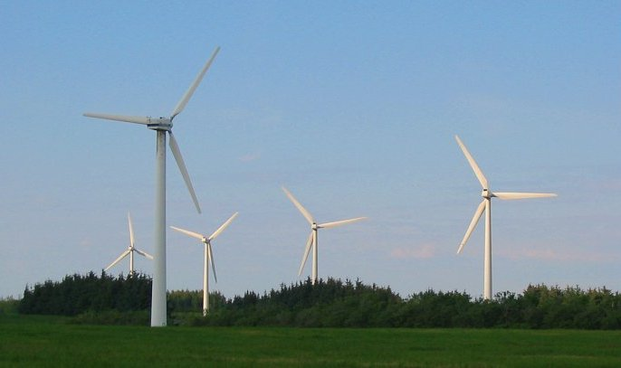

En la actualidad, la energía eólica se utiliza principalmente para producir electricidad, lo que se consigue mediante aerogeneradores conectados a las grandes redes de distribución de energía eléctrica, entre otras. Los parques eólicos construidos en tierra representan una fuente de energía cada vez más barata y competitiva. Es incluso más barata en muchas regiones que otras fuentes de energía convencionales. Además se puede proporcionar electricidad en regiones aisladas que no tienen acceso a la red eléctrica mediante instalaciones eólicas de reducido tamaño, o también con energía solar fotovoltaica. Las compañías eléctricas distribuidoras adquieren cada vez en mayor medida el excedente de electricidad producido por pequeñas instalaciones eólicas domésticas. El auge de la energía eólica ha provocado también la planificación y construcción de parques eólicos offshore —es decir que están situados en el mar—, cerca de las costas. La energía del viento es más estable y fuerte en el mar que en tierra, y los parques eólicos marinos tienen un impacto visual menor, aunque los costos de construcción y mantenimiento son considerablemente mayores.
A finales de 2016 , la capacidad mundial instalada de energía eólica ascendía a 370GW, generando alrededor del 5% del consumo de electricidad mundial.Dinamarca genera más de un 25% de su electricidad mediante energía eólica, y más de 80 países en todo el mundo la utilizan de forma creciente para proporcionar energía eléctrica en sus redes de distribución, aumentando su capacidad anualmente con tasas por encima del 20%. En España la energía eólica produjo un 20,3% del consumo eléctrico de la península en 2014, convirtiéndose en la segunda tecnología con mayor contribución a la cobertura de la demanda, muy cerca de la energía nuclear con un 22,0%.
La energía eólica es un recurso abundante, renovable y limpio que ayuda a disminuir las emisiones de gases de efecto invernadero al reemplazar fuentes de energía a base de combustibles fósiles. El impacto ambiental de este tipo de energía es además, generalmente, menos problemático que el de otras fuentes de energía.
La energía del viento es bastante estable y predecible a escala anual, aunque presenta variaciones significativas a escalas de tiempo menores. Al incrementarse la proporción de energía eólica producida en una determinada región o país, se hace imprescindible establecer una serie de mejoras en la red eléctrica local. Diversas técnicas de control energético, como una mayor capacidad de almacenamiento de energía, una distribución geográfica amplia de los aerogeneradores, la disponibilidad de fuentes de energía de respaldo, la posibilidad de exportar o importar energía a regiones vecinas o la reducción de la demanda cuando la producción eólica es menor, pueden ayudar a mitigar en gran medida estos problemas. Además, son de extrema importancia las previsiones de producción eólica que permiten a los gestores de la red eléctrica estar preparados y anticiparse frente a las previsibles variaciones en la producción eólica que puedan tener lugar a corto plazo.

CÓMO SE PRODUCE Y GENERA
La energía del viento está relacionada con el movimiento de las masas de aire que se desplazan desde zonas de alta presión atmosférica hacia zonas adyacentes de menor presión, con velocidades proporcionales al gradiente de presión y así poder generar energía.
Los vientos se generan a causa del calentamiento no uniforme de la superficie terrestre debido a la radiación solar; entre el 1 y el 2 % de la energía proveniente del Sol se convierte en viento. Durante el día, los continentes transfieren una mayor cantidad de energía solar al aire que las masas de agua, haciendo que este se caliente y se expanda, por lo que se vuelve menos denso y se eleva. El aire más frío y pesado que proviene de los mares, océanos y grandes lagos se pone en movimiento para ocupar el lugar dejado por el aire caliente.
La energía del viento se aprovecha mediante el uso de máquinas eólicas o aeromotores capaces de transformar la energía eólica en energía mecánica de rotación utilizable, ya sea para accionar directamente las máquinas operatrices o para la producción de energía eléctrica. En este último caso, el más ampliamente utilizado en la actualidad, el sistema de conversión —que comprende un generador eléctrico con sus sistemas de control y de conexión a la red— es conocido como aerogenerador. En estos la energía eólica mueve una hélice y mediante un sistema mecánico se hace girar el rotor de un generador, normalmente un alternador, que produce energía eléctrica. Para que su instalación resulte rentable, suelen agruparse en concentraciones denominadas parques eólicos.
Una turbina eólica es una máquina que transforma la energía del viento en energía mecánica mediante unas aspas oblicuas unidas a un eje común. El eje giratorio puede conectarse a varios tipos de maquinaria, sea para moler grano (molinos), bombear agua o generar electricidad. Cuando se usa para producir electricidad se le denomina generador de turbina de viento. Las máquinas movidas por el viento tienen un origen remoto, siendo las más antiguas las que funcionaban como molinos. La energía eólica es la energía que se obtiene del viento o, dicho de otro modo, es el aprovechamiento de la energía cinética de las masas de aire que puede convertirse en energía mecánica y a partir de ella en electricidad u otras formas útiles de Energía en cotidianas actividades humanas.
DESVENTAJAS DE LA ENERGÍA EÓLICA
Debido a la variabilidad natural y la impredecibilidad del viento, para que la energía eólica pueda ser usada como única fuente de energía eléctrica es necesario almacenar la energía que se produce cuando hay viento para poder luego utilizarla cuando no lo hay. Pero hasta el momento no existen sistemas lo suficientemente grandes como para almacenar cantidades considerables de energía de forma eficiente. Por lo tanto, para hacer frente a los valles en la curva de producción de energía eólica y evitar apagones generalizados, es indispensable un respaldo de las energías convencionales como centrales termoeléctricas de carbón, gas natural, petróleo o ciclo combinado o centrales hidroeléctricas reversibles, por ejemplo. Esto supone un inconveniente, puesto que cuando respaldan a la eólica, las centrales de carbón no pueden funcionar a su rendimiento óptimo, que se sitúa cerca del 90% de su potencia. Tienen que quedarse muy por debajo de este porcentaje para poder subir sustancialmente su producción en el momento en que amaine el viento. Es por ello que, cuando funcionan en este modo, las centrales térmicas consumen más combustible por kWh producido. Además, al aumentar y disminuir su producción cada vez que cambia la velocidad del viento se produce un desgaste mayor de la maquinaría.
VENTAJAS DE LA ENERGÍA EÓLICA
- Es un tipo de energía renovable ya que tiene su origen en procesos atmosféricos debidos a la energía que llega a la Tierra procedente del Sol.
- Es una energía limpia al no requerir una combustión, por lo que no produce emisiones atmosféricas ni residuos contaminantes, evitando así un incremento del efecto invernadero y el cambio climático.
- Puede instalarse en espacios no aptos para otros fines, por ejemplo en zonas desérticas, próximas a la costa, en laderas áridas o muy empinadas para ser cultivables.
- Puede convivir con otros usos del suelo, por ejemplo prados para uso ganadero o cultivos bajos como trigo, maíz, patatas, remolacha, etc.
- Crea un elevado número de puestos de trabajo en las plantas de ensamblaje y las zonas de instalación.
- Es posible construir parques eólicos en el mar, donde el viento es más fuerte, más constante y el impacto social es menor, aunque aumentan los costos de instalación y mantenimiento. Los parques offshore son especialmente importantes en los países del norte de Europa como Dinamarca.
- La situación física actual dispersa en países como España permite compensar la baja producción de unos parques eólicos por falta de viento con la alta producción en otras zonas. De esta forma se estabiliza la forma de onda producida en la generación eléctrica, solventando los problemas que presentaban los aerogeneradores como productores de energía en sus inicios.
- Su utilización combinada con otros tipos de energía, habitualmente la energía solar fotovoltaica, permite la autoalimentación de viviendas, logrando autonomías superiores a las 82 horas y terminando así con la necesidad de conectarse a redes de suministro.
- Su inclusión en una red eléctrica permite, cuando las condiciones del viento son adecuadas, ahorrar combustible en las centrales térmicas y/o agua en los embalses de las centrales hidroeléctricas.
- Su instalación es rápida, entre 4 y 9 meses.